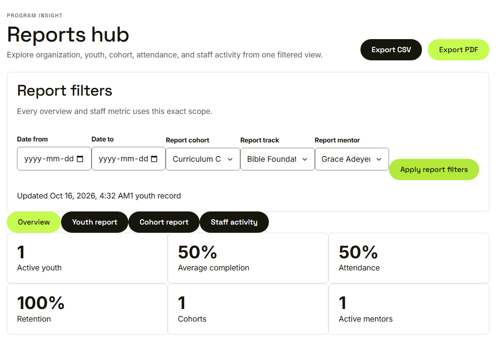
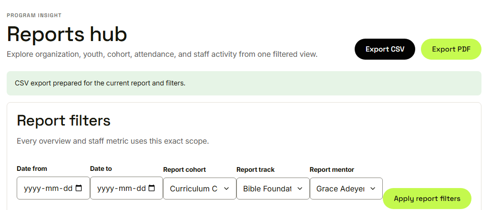
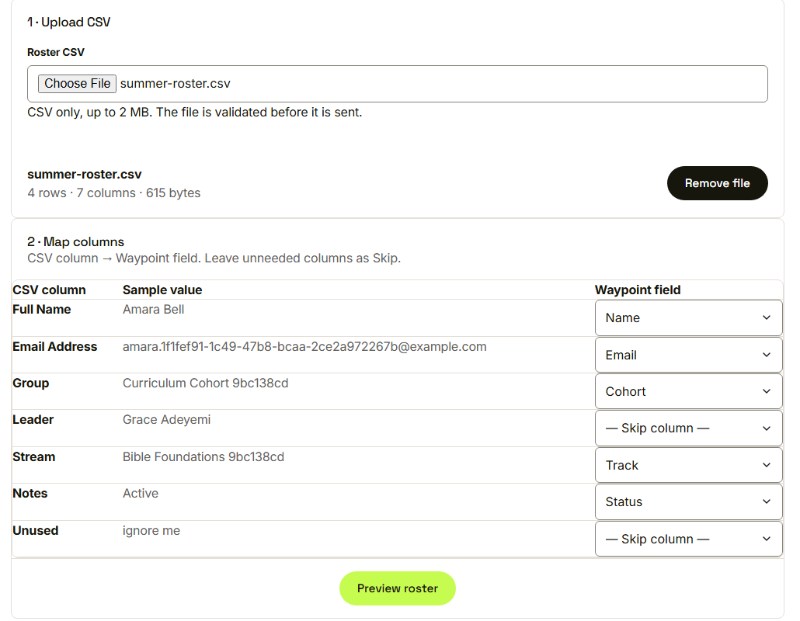
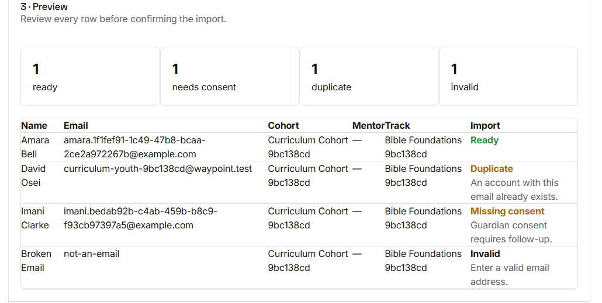
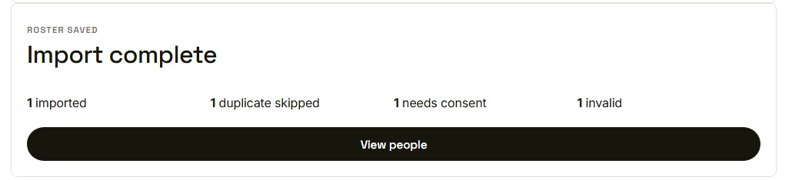

Waypoint · Journey 29
Report, export and import
Filtered reports out, reviewed rosters in
Every figure follows the filters

One youth record in scope
Exactly what is on the screen

CSV export prepared
Upload, then map the columns

Four rows, seven columns
Every row is checked

Ready, duplicate, missing consent, invalid
Import complete

Counted and recorded in the audit log
Things to remember
- An export matches the screen exactly
- Nobody can export more than their role can see
- Imports go upload, map, preview
- Only ready rows become accounts